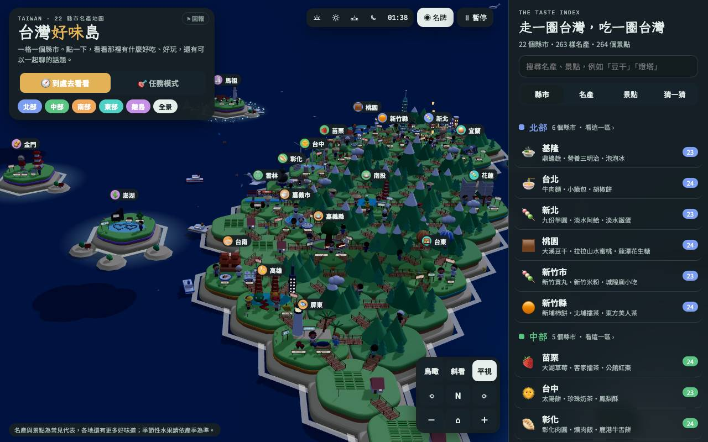
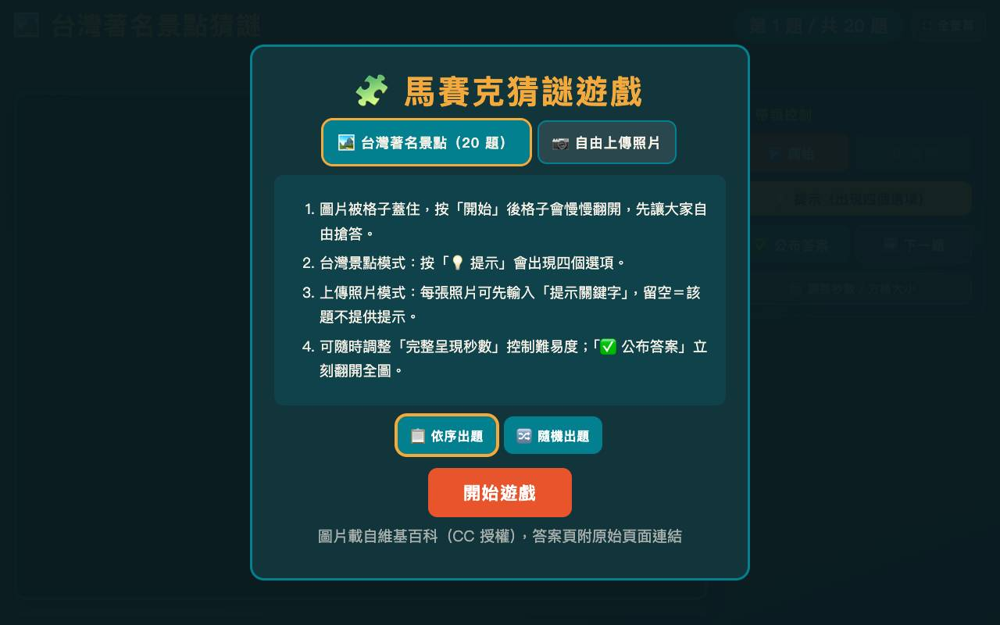

大家好！我是鍾孟修 職能治療師
協會與機構
- 社團法人台灣生活復能健康促進協會 理事長
- 愛迪樂有限公司（105/08）
- 愛迪樂居家職能治療所（107/01）
- 愛迪樂物理治療所（107/12）
- 愛迪樂中山聯合治療所（111/12）
- 愛迪樂新北長期照顧服務機構（108/01）
- 愛迪樂三重失智症據點（111/01）
- 新北市私立愛迪樂東湖國小社區長照機構（112/05）
- 銀光復能咖啡館 C 單位巷弄長照站（108/11）
- 五股日間照顧中心及身障日間照顧中心（115）
角色與專長
- 職能治療師／執行長
- Homeseen 失智症遊戲包 共同創辦人
- 關懷小丑協會 監事
- 長庚大學職能治療系系友會 監事
- 銀髮體適能教練、皮拉提斯教練 ABC 級
- 認知桌遊活動遊戲設計
- MAT 功能性評估國際認證
- 簡報遊戲化教學設計
 認識我
認識我 加入粉絲專頁
加入粉絲專頁先當個案玩一題：老歌、家鄉味、馬賽克景點




不想打字？按麥克風，用說的就好
- 1ChatGPT：按麥克風「聽寫」
按一下開始說，說完再按一下。文字會出現在輸入框，可以先修改再送出。在個案家門口、在車上想到點子，講完就送出。
- 2ChatGPT：藍色按鈕是「語音對話」
跟 AI 直接聊天，邊講邊釐清想法。聊完對話紀錄會留成文字，可以回頭複製。
- 3Gemini：按麥克風「語音輸入」
一樣按一下開始、再按一下結束。手機 Gemini App 的麥克風也一樣。
- 4第一次用：允許麥克風
瀏覽器跳出詢問就按「允許」。電腦沒有麥克風，就用手機 App 練習。
語音轉出來是簡體字？這樣設定成繁體中文
- 1ChatGPT：聲音的「語言」選「國語」
打開 ChatGPT ↗：左下角頭像 → 設定 → 聲音 → 語言。不要用「自動偵測」，比較不會被認成其他語言。
- 2在清單裡找到「國語」
清單很長，可以直接滑到「國語」。介面語言在「一般 → 語言」，選中文（台灣）。
- 3ChatGPT：自訂指示寫一句話
打開 ChatGPT 個人化 ↗：個人化 → 自訂指示 → ChatGPT，貼上下方那句。之後每個對話都會照做。
- 4Gemini：Google 帳戶語言設成繁體中文（台灣）
網址 myaccount.google.com/language ↗ → 偏好語言按鉛筆 → 選「繁體中文 台灣」。Gemini 的語音輸入跟著這個設定。
- 5Gemini：「給 Gemini 的指令」也寫一句
打開 Gemini ↗：左下齒輪 → 個人化智慧服務 → 給 Gemini 的指令，貼上同一句話。
② AI 回答變成簡體字：直接再打一句「請把上面轉成繁體中文，內容不要改」，它就會改回來。
做道具：請 ChatGPT 畫大字牌卡、題目卡、學習單
- 1找一張版面喜歡的海報
右側直排大標題、粉彩配色、手繪人物、彩色小標籤、左下「溫馨提醒」。截圖或存下來。
- 2上傳參考圖，說清楚要參考什麼
寫出你看到的版面特徵，加一句「不要複製它的文字、QR code 和標誌」，再放進自己的內容。
- 3等它畫
約 1 分鐘。這段時間可以先想要怎麼檢查內容。
- 4檢查成品
版面跟參考海報一樣好讀，內容換成自己的（截圖示範的是一張衛教海報，牌卡、題目卡做法一樣）。逐字看：錯字、數字、說法。
- 5小地方用「標註」圈起來改
點圖片 → 「標註」圈起來說要改什麼。字有錯就圈起來請它改；改不好就直接說「整張重畫，只改這幾個字」。
影片交給 Gemini：貼上 YouTube 網址，整理出聊天題目
- 1YouTube 先找「提問」按鈕
影片下方，分享、下載旁邊。有這顆就能直接在 YouTube 裡問，不用另外開 AI。
- 2按「生成影片摘要」
右側跳出對話框，可以點建議問題，也能自己打字問。
- 3摘要附時間碼
點時間碼直接跳到那一段，備課只看需要的片段。
- 4Gemini：貼影片網址就能讀
逐段整理、每段附時間碼（截圖示範的是衛教影片；老歌 MV、懷舊影片一樣）。Flash 轉圈太久時，改用 Pro 模型重問一次。
- 5ChatGPT：讀不到影片內容
它老實說拿不到畫面與字幕，表格全寫「尚無法確認」。影片的事交給 Gemini。
指令範例：「看這支影片，挑 3 個可以停下來問長輩的畫面，附時間碼和問題。」
Gemini Canvas：講清楚玩法，兩分鐘做出小遊戲
- 1開新對話，描述你要的網頁
想要特定外觀，一樣先上傳喜歡的網頁截圖。寫清楚四件事：給誰用（一對一陪伴長輩）、內容（題目與題數）、互動（大按鈕、答對鼓勵、不扣分）、外觀（大字、溫暖配色）。
- 2等它寫完，看預覽
約 1～2 分鐘。上方工具列：程式碼、預覽、匯出、分享、全螢幕。
- 3按全螢幕試玩
Gemini 常會自己加功能（截圖是加了朗讀題目和兩隊計分）。不要的功能直接說「拿掉計分」。
- 4逐題檢查內容
題目和答案由你把關。發現不對就說「第 3 題改成…」，它會只改那一題。
- 5答對有鼓勵，看看成品
平板、手機打開就能玩。要帶走：按「分享」產生連結，傳到自己的 LINE 或存成書籤。
這些都是 AI 做的：手機、平板打開，帶到個案家就能玩


Happiness is not a goal…
it's a by-product of a life well lived.
快樂不是一個目標，它是踏實人生的副產品。（Eleanor Roosevelt）
設計｜愛迪樂 鍾孟修 職能治療師 範例教案皆可免費使用